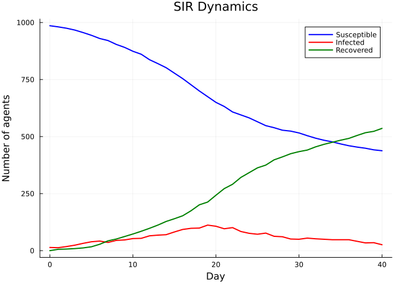
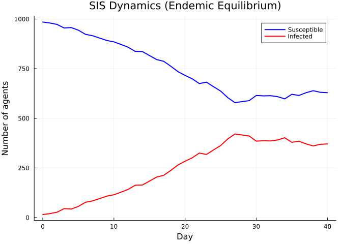
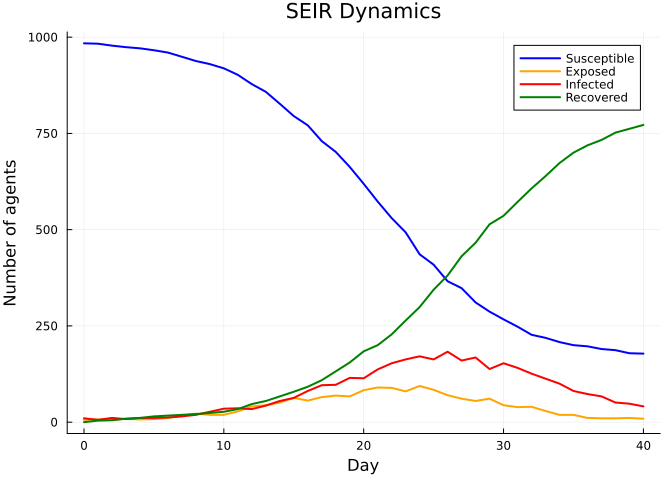
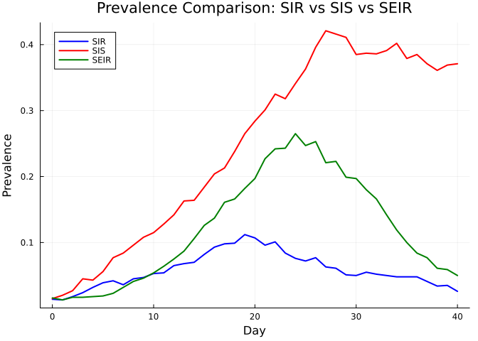
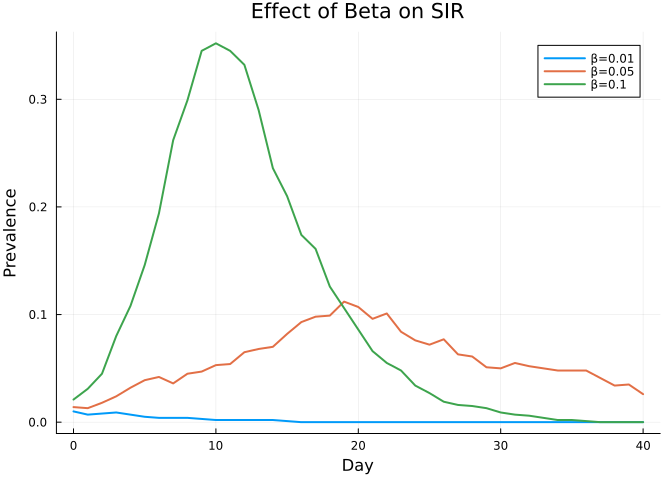
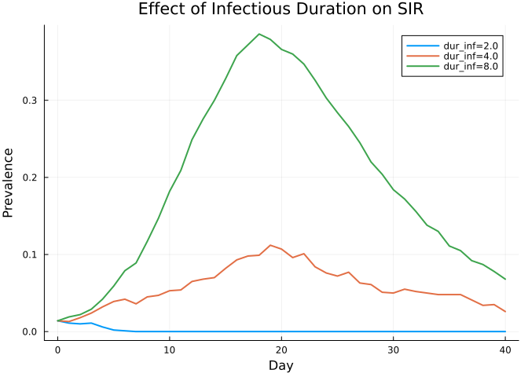
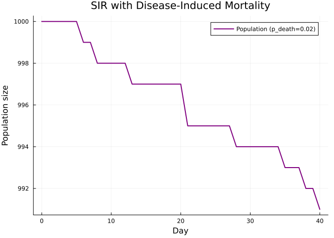
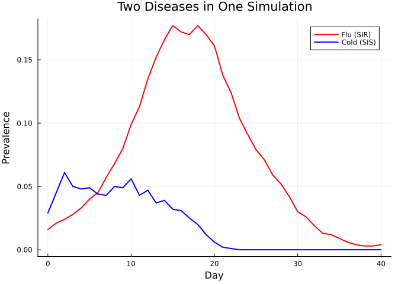

Disease Models
Simon Frost
- Overview
- SIR: susceptible → infected → recovered
- SIS: susceptible → infected → susceptible
- SEIR: susceptible → exposed → infected → recovered
- Comparing prevalence across models
- Modifying disease parameters
- Disease-induced mortality
- Multiple diseases simultaneously
- Summary
Overview
Starsim.jl ships with several built-in disease models: SIR, SIS, and SEIR. This vignette compares their dynamics, shows how to modify disease parameters, and demonstrates running multiple diseases simultaneously.
SIR: susceptible → infected → recovered
The classic SIR model. Recovered individuals gain permanent immunity.
using Starsim
using Plots
n_contacts = 10
beta = 0.5 / n_contacts
sim_sir = Sim(
n_agents = 1_000,
networks = RandomNet(n_contacts=n_contacts),
diseases = SIR(beta=beta, dur_inf=4.0, init_prev=0.01),
dt = 1.0,
stop = 40.0,
rand_seed = 42,
verbose = 0,
)
run!(sim_sir)
n_sus_sir = get_result(sim_sir, :sir, :n_susceptible)
n_inf_sir = get_result(sim_sir, :sir, :n_infected)
n_rec_sir = get_result(sim_sir, :sir, :n_recovered)
tvec_sir = 0:length(n_sus_sir)-1
plot(tvec_sir, n_sus_sir, label="Susceptible", lw=2, color=:blue)
plot!(tvec_sir, n_inf_sir, label="Infected", lw=2, color=:red)
plot!(tvec_sir, n_rec_sir, label="Recovered", lw=2, color=:green)
xlabel!("Day")
ylabel!("Number of agents")
title!("SIR Dynamics")
SIS: susceptible → infected → susceptible
In SIS, infected individuals return to the susceptible state — there is no lasting immunity. This produces endemic equilibria.
sim_sis = Sim(
n_agents = 1_000,
networks = RandomNet(n_contacts=n_contacts),
diseases = SIS(beta=beta, dur_inf=4.0, init_prev=0.01),
dt = 1.0,
stop = 40.0,
rand_seed = 42,
verbose = 0,
)
run!(sim_sis)
n_sus_sis = get_result(sim_sis, :sis, :n_susceptible)
n_inf_sis = get_result(sim_sis, :sis, :n_infected)
tvec_sis = 0:length(n_sus_sis)-1
plot(tvec_sis, n_sus_sis, label="Susceptible", lw=2, color=:blue)
plot!(tvec_sis, n_inf_sis, label="Infected", lw=2, color=:red)
xlabel!("Day")
ylabel!("Number of agents")
title!("SIS Dynamics (Endemic Equilibrium)")
SEIR: susceptible → exposed → infected → recovered
SEIR adds a latent (exposed) period before individuals become infectious. This delays the epidemic peak.
sim_seir = Sim(
n_agents = 1_000,
networks = RandomNet(n_contacts=n_contacts),
diseases = SEIR(beta=beta, dur_exp=2.0, dur_inf=4.0, init_prev=0.01),
dt = 1.0,
stop = 40.0,
rand_seed = 42,
verbose = 0,
)
run!(sim_seir)
n_sus_seir = get_result(sim_seir, :seir, :n_susceptible)
n_exp_seir = get_result(sim_seir, :seir, :n_exposed)
n_inf_seir = get_result(sim_seir, :seir, :n_infected)
n_rec_seir = get_result(sim_seir, :seir, :n_recovered)
tvec_seir = 0:length(n_sus_seir)-1
plot(tvec_seir, n_sus_seir, label="Susceptible", lw=2, color=:blue)
plot!(tvec_seir, n_exp_seir, label="Exposed", lw=2, color=:orange)
plot!(tvec_seir, n_inf_seir, label="Infected", lw=2, color=:red)
plot!(tvec_seir, n_rec_seir, label="Recovered", lw=2, color=:green)
xlabel!("Day")
ylabel!("Number of agents")
title!("SEIR Dynamics")
Comparing prevalence across models
prev_sir = get_result(sim_sir, :sir, :prevalence)
prev_sis = get_result(sim_sis, :sis, :prevalence)
prev_seir = get_result(sim_seir, :seir, :prevalence)
tvec_sir2 = 0:length(prev_sir)-1
tvec_sis2 = 0:length(prev_sis)-1
tvec_seir2 = 0:length(prev_seir)-1
plot(tvec_sir2, prev_sir, label="SIR", lw=2, color=:blue)
plot!(tvec_sis2, prev_sis, label="SIS", lw=2, color=:red)
plot!(tvec_seir2, prev_seir, label="SEIR", lw=2, color=:green)
xlabel!("Day")
ylabel!("Prevalence")
title!("Prevalence Comparison: SIR vs SIS vs SEIR")
Modifying disease parameters
The transmission rate beta and infectious duration dur_inf are key drivers of epidemic size. Let’s explore their effect.
Varying beta
betas = [0.01, 0.05, 0.10]
p = plot(xlabel="Day", ylabel="Prevalence", title="Effect of Beta on SIR")
for (i, b) in enumerate(betas)
sim = Sim(
n_agents=1_000, networks=RandomNet(n_contacts=n_contacts),
diseases=SIR(beta=b, dur_inf=4.0, init_prev=0.01),
dt=1.0, stop=40.0, rand_seed=42, verbose=0,
)
run!(sim)
prev = get_result(sim, :sir, :prevalence)
plot!(p, 0:length(prev)-1, prev, label="β=$b", lw=2)
end
p
Varying infectious duration
durations = [2.0, 4.0, 8.0]
p = plot(xlabel="Day", ylabel="Prevalence", title="Effect of Infectious Duration on SIR")
for d in durations
sim = Sim(
n_agents=1_000, networks=RandomNet(n_contacts=n_contacts),
diseases=SIR(beta=beta, dur_inf=d, init_prev=0.01),
dt=1.0, stop=40.0, rand_seed=42, verbose=0,
)
run!(sim)
prev = get_result(sim, :sir, :prevalence)
plot!(p, 0:length(prev)-1, prev, label="dur_inf=$d", lw=2)
end
p
Disease-induced mortality
The p_death parameter sets the probability of death upon infection.
sim_lethal = Sim(
n_agents = 1_000,
networks = RandomNet(n_contacts=n_contacts),
diseases = SIR(beta=beta, dur_inf=4.0, init_prev=0.01, p_death=0.02),
dt = 1.0,
stop = 40.0,
rand_seed = 42,
verbose = 0,
)
run!(sim_lethal)
n_alive = get_result(sim_lethal, :n_alive)
tvec = 0:length(n_alive)-1
plot(tvec, n_alive, label="Population (p_death=0.02)", lw=2, color=:purple)
xlabel!("Day")
ylabel!("Population size")
title!("SIR with Disease-Induced Mortality")
Multiple diseases simultaneously
Starsim supports running multiple diseases in the same simulation. Each disease operates independently on the same population.
sim_multi = Sim(
n_agents = 1_000,
networks = RandomNet(n_contacts=n_contacts),
diseases = [
SIR(name=:flu, beta=0.08, dur_inf=3.0, init_prev=0.01),
SIS(name=:cold, beta=0.05, dur_inf=3.0, init_prev=0.02),
],
dt = 1.0,
stop = 40.0,
rand_seed = 42,
verbose = 0,
)
run!(sim_multi)
prev_flu = get_result(sim_multi, :flu, :prevalence)
prev_cold = get_result(sim_multi, :cold, :prevalence)
tvec_flu = 0:length(prev_flu)-1
tvec_cold = 0:length(prev_cold)-1
plot(tvec_flu, prev_flu, label="Flu (SIR)", lw=2, color=:red)
plot!(tvec_cold, prev_cold, label="Cold (SIS)", lw=2, color=:blue)
xlabel!("Day")
ylabel!("Prevalence")
title!("Two Diseases in One Simulation")
Summary
| Model | Compartments | Key feature |
|---|---|---|
| SIR | S → I → R | Permanent immunity; single epidemic wave |
| SIS | S → I → S | No immunity; endemic equilibrium |
| SEIR | S → E → I → R | Latent period delays peak |
- Increase
betaordur_infto produce larger epidemics - Use
p_deathfor disease-induced mortality - Multiple diseases can share the same population and network